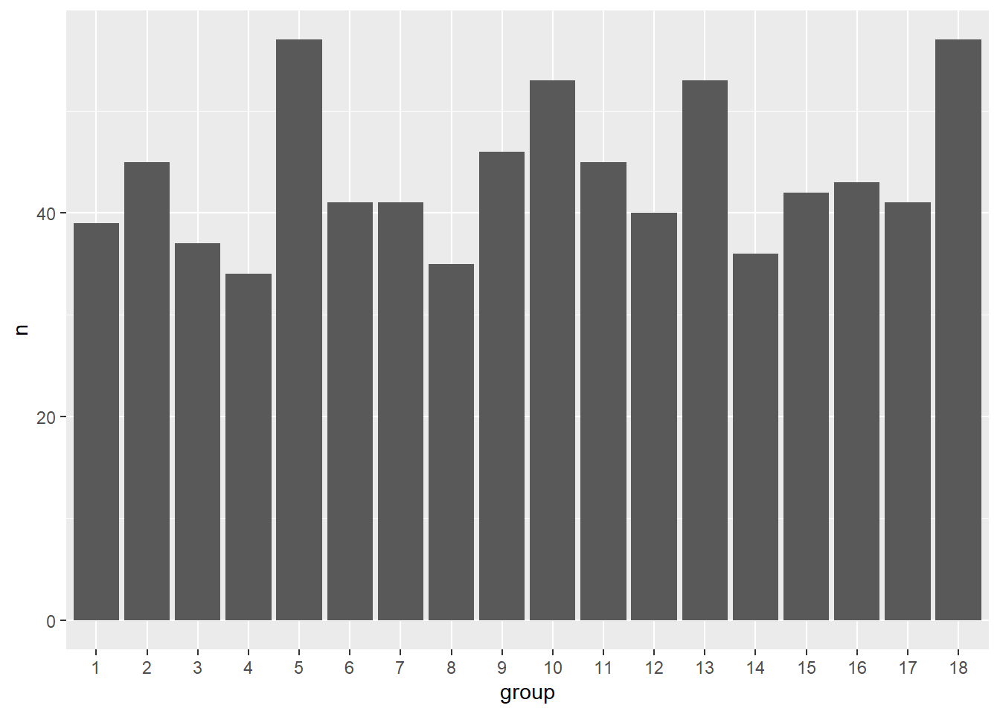
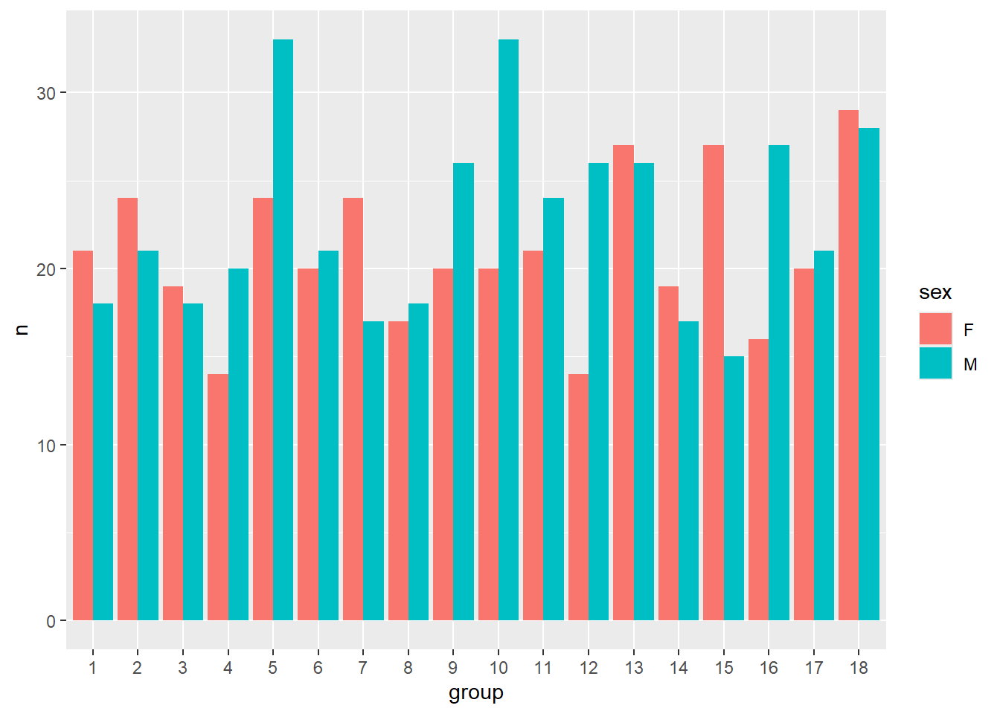
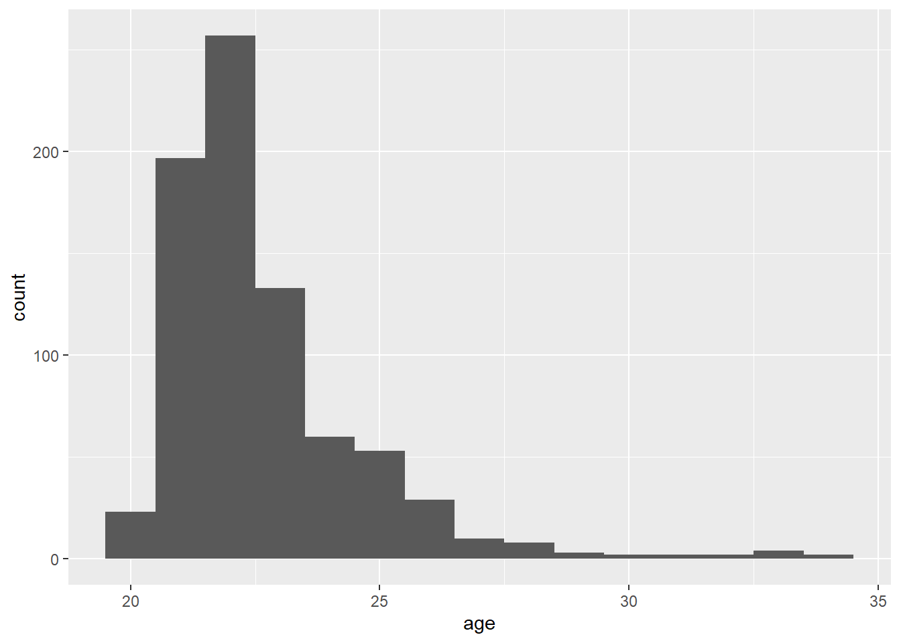
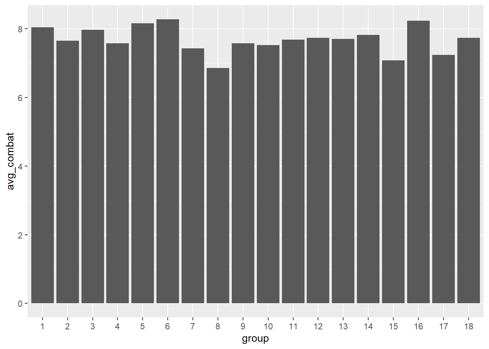
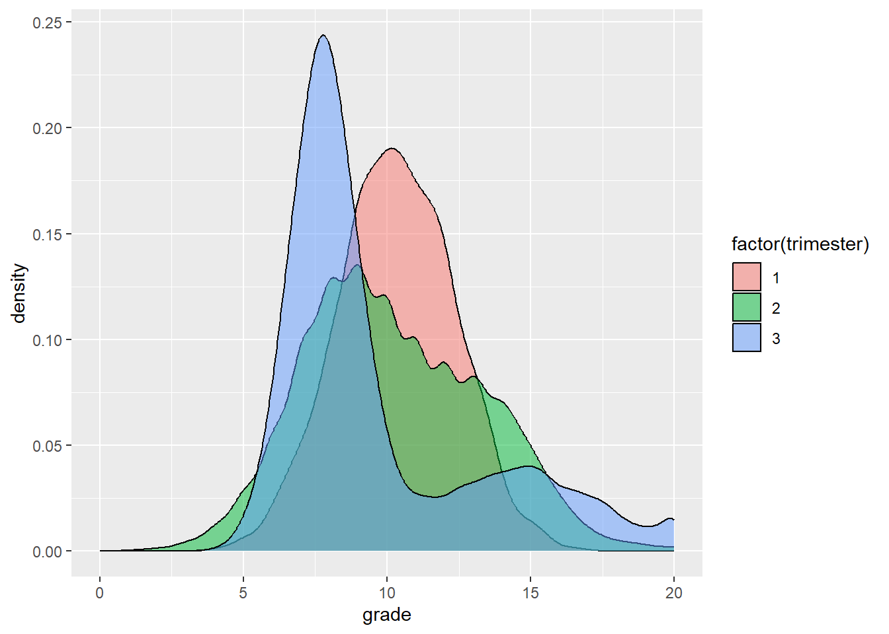
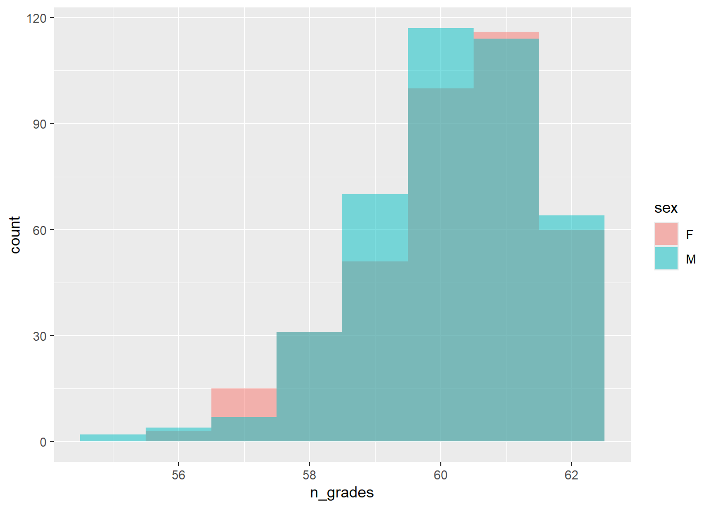
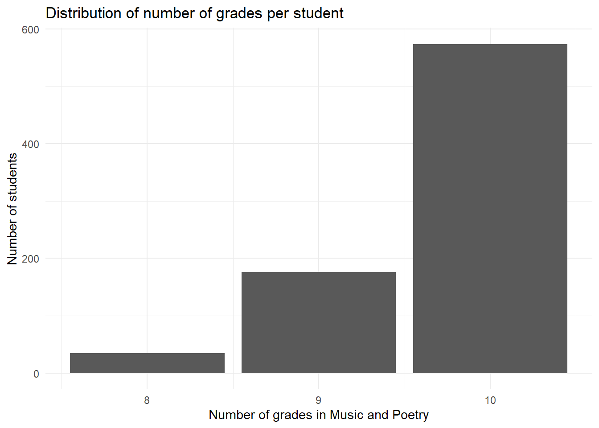
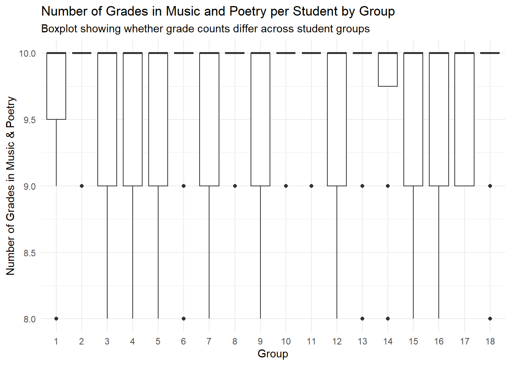
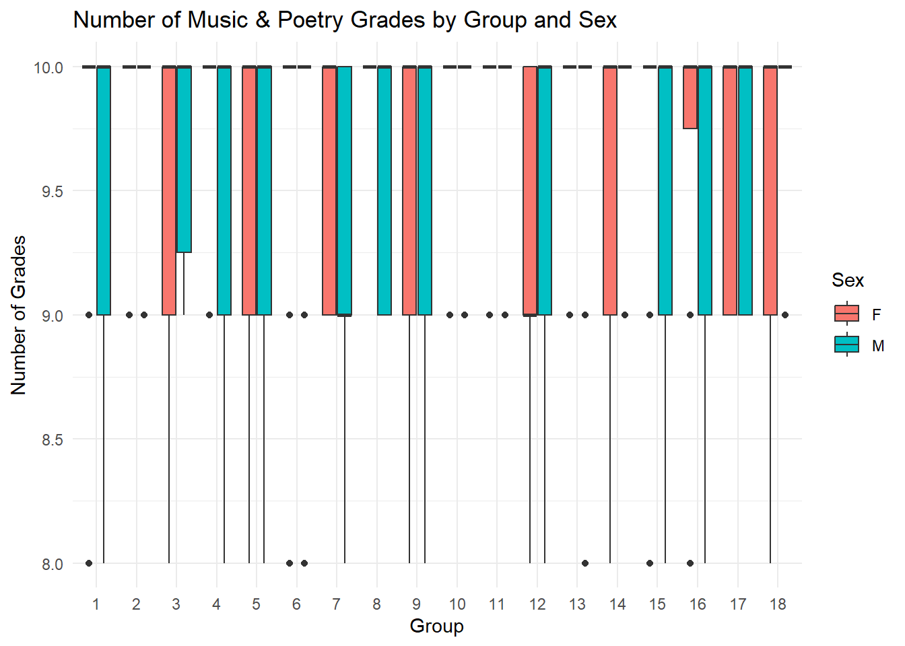
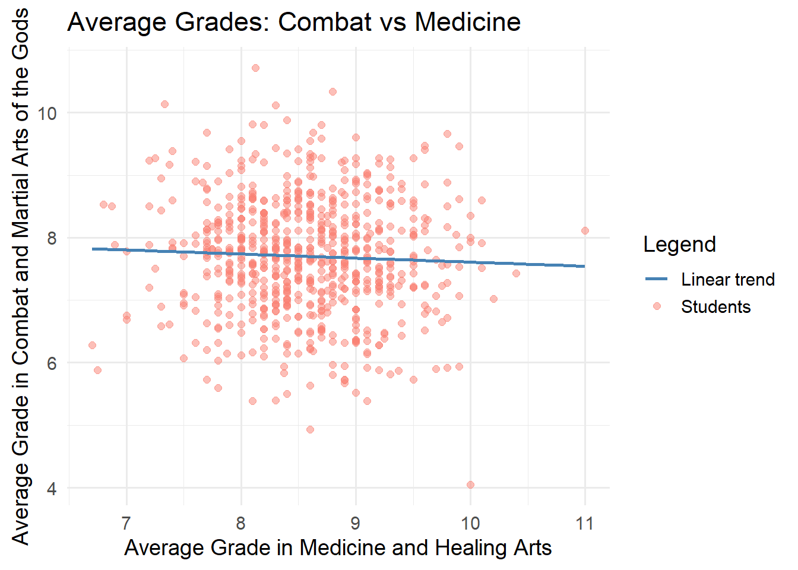

library(vroom)
library(ggplot2)
library(knitr)
library(dplyr)
library(here)
library(tidyr)
library(lubridate)
library(readr)
library(tidyverse)
here::i_am("grades.Rproj")PERRY
Link to my GitHub repository: https://github.com/Byxac/grades.git
Introduction
Q1:
courses <- vroom(here("data", "courses.csv"))Rows: 10 Columns: 4
── Column specification ────────────────────────────────────────────────────────
Delimiter: ","
chr (1): course
dbl (3): course_id, trimester, nb_grades
ℹ Use `spec()` to retrieve the full column specification for this data.
ℹ Specify the column types or set `show_col_types = FALSE` to quiet this message.Q2
courses |>
arrange(course) |>
rename(
"course name" = course,
"identifier" = course_id,
"trimester" = trimester,
"number of exams" = nb_grades
) |>
kable()| course name | identifier | trimester | number of exams |
|---|---|---|---|
| Architecture and Sculpture | 9 | 2 | 6 |
| Astronomy and Cosmology | 7 | 2 | 5 |
| Combat and Martial Arts of the Gods | 3 | 2 | 6 |
| Divine Philosophy and Ethics | 1 | 3 | 4 |
| Greek Mythology and Folklore | 2 | 2 | 9 |
| History and Civilization of Ancient Greece | 5 | 2 | 7 |
| Medicine and Healing Arts | 8 | 2 | 5 |
| Music and Poetry | 6 | 3 | 10 |
| Naval Warfare and Seafaring | 10 | 1 | 4 |
| Rhetoric and Persuasion | 4 | 2 | 6 |
Q3
students <- vroom(here("data", "students.csv"))|>
mutate(
birth_date = ymd(birth_date),
sex = factor(sex),
group = factor(group)
)Rows: 785 Columns: 4
── Column specification ────────────────────────────────────────────────────────
Delimiter: ","
chr (1): sex
dbl (2): id, group
date (1): birth_date
ℹ Use `spec()` to retrieve the full column specification for this data.
ℹ Specify the column types or set `show_col_types = FALSE` to quiet this message.In the students dataset, the birth_date variable is correctly stored as a Date object.
Q4
grades <- read_delim(
"data/grades.csv",
delim = ";",
na = "_"
)Rows: 47707 Columns: 3
── Column specification ────────────────────────────────────────────────────────
Delimiter: ";"
dbl (3): id, course_id, grade
ℹ Use `spec()` to retrieve the full column specification for this data.
ℹ Specify the column types or set `show_col_types = FALSE` to quiet this message.Q5
students |>
count(group) |>
ggplot(aes(x = group, y = n)) +
geom_col()
Q6
students |>
count(group, sex) |>
ggplot(aes(x = group, y = n, fill = sex)) +
geom_col(position = "dodge")
Q7
students <- students |>
mutate(
age = time_length(today() - birth_date, "year") |> round()
)
ggplot(students, aes(x = age)) +
geom_histogram(binwidth = 1)
Q8
median_age <- students |>
group_by(group) |>
summarise(median_age = as.integer(median(age)))
median_age |>
kable(col.names = c("Group", "Median age"))| Group | Median age |
|---|---|
| 1 | 23 |
| 2 | 22 |
| 3 | 22 |
| 4 | 22 |
| 5 | 22 |
| 6 | 22 |
| 7 | 22 |
| 8 | 23 |
| 9 | 22 |
| 10 | 22 |
| 11 | 22 |
| 12 | 22 |
| 13 | 22 |
| 14 | 22 |
| 15 | 22 |
| 16 | 22 |
| 17 | 22 |
| 18 | 22 |
Q9
students |>
arrange(desc(age)) |>
group_by(group) |>
slice_max(age, n = 1) |>
ungroup() |>
arrange(desc(age)) |>
select(id, sex, age, group) |>
kable()| id | sex | age | group |
|---|---|---|---|
| 74 | F | 34 | 9 |
| 775 | M | 34 | 18 |
| 546 | M | 33 | 1 |
| 306 | M | 33 | 6 |
| 688 | M | 33 | 14 |
| 481 | F | 31 | 12 |
| 549 | F | 31 | 15 |
| 364 | F | 30 | 5 |
| 589 | F | 29 | 2 |
| 68 | F | 28 | 3 |
| 265 | M | 28 | 16 |
| 148 | F | 28 | 17 |
| 394 | M | 28 | 17 |
| 704 | F | 28 | 17 |
| 121 | F | 27 | 8 |
| 279 | F | 27 | 11 |
| 524 | F | 26 | 7 |
| 41 | M | 26 | 10 |
| 246 | F | 26 | 10 |
| 345 | M | 26 | 10 |
| 334 | M | 25 | 4 |
| 338 | F | 25 | 4 |
| 651 | M | 25 | 4 |
| 741 | F | 25 | 4 |
| 164 | F | 25 | 13 |
| 185 | F | 25 | 13 |
| 275 | F | 25 | 13 |
| 565 | F | 25 | 13 |
Q10
The data set contains 47229 grades.
Q11
combat_id <- courses |>
filter(course == "Combat and Martial Arts of the Gods") |>
pull(course_id)
grades |>
filter(course_id == combat_id) |>
left_join(students, by = "id") |>
group_by(group) |>
summarise(avg_combat = mean(grade, na.rm = TRUE)) |>
ggplot(aes(x = group, y = avg_combat)) +
geom_col()
Even though the average grade in the Combat and Martial Arts of the Gods class is around 8 for every group, the grades can go from 0 up to 20 (so this graphic is not that representative, but if we scale the average grade from 0 to 20, the differences between the groups are harder to observe).
Q12
grades |>
left_join(courses, by = "course_id") |>
ggplot(aes(x = grade, fill = factor(trimester))) +
geom_density(alpha = 0.5)
The graph shows the density distributions of grades for the three trimesters. From the plot, we can observe the following patterns:
Trimester 1: The grades are almost following a distribution, centered around higher grades (roughly between 8 and 12). It has the highest peak, meaning grades are more concentrated around that central value. Overall, trimester 1 appears to have the best performance.
Trimester 2: The distribution is more spread out and slightly shifted to the right compared to trimester 1. The peak is lower, meaning grades are more variable. Grades range roughly from 7 to 15, with many around 8–10. Performance is solid but less consistent than in trimester 1.
Trimester 3: The distribution is clearly shifted toward lower grades. Many grades fall between 5 and 10, with a peak around 7 (almost 25% of the students have this grade). There is also a long right tail: this is the semester with the largest proportion of students having 20/20 (about 2,5%, compared to almost 0 during the other trimesters). Trimester 3 shows the lowest performance overall.
Q13
grades_count <- grades |>
drop_na(grade) |>
count(id, name = "n_grades") |>
left_join(students |> select(id, group, sex), by = "id")
grades_count |>
slice_head(n = 10) |>
kable()| id | n_grades | group | sex |
|---|---|---|---|
| 1 | 57 | 15 | F |
| 2 | 60 | 15 | F |
| 3 | 58 | 10 | F |
| 4 | 61 | 15 | M |
| 5 | 61 | 12 | M |
| 6 | 57 | 5 | F |
| 7 | 57 | 17 | F |
| 8 | 60 | 1 | F |
| 9 | 59 | 6 | F |
| 10 | 59 | 11 | M |
summary_tbl <- grades_count |>
summarise(
min = min(n_grades),
max = max(n_grades),
avg = mean(n_grades),
median = median(n_grades)
)
summary_tbl |> kable()| min | max | avg | median |
|---|---|---|---|
| 55 | 62 | 60.16433 | 60 |
Q14
grades_count |>
ggplot(aes(x = n_grades, fill = sex)) +
geom_histogram(position = "identity", alpha = 0.5, binwidth = 1)
The histogram compares the distribution of the number of grades per student for female and male students. From the figure, we can observe that:
- Both distributions are very similar: regardless of their sex, the majority of the students have between 58 and 62 grades recorded, and the overall shape of the distributions overlaps almost perfectly.
- Slight differences: female students have a slightly wider spread toward lower numbers of grades (around 56–58) and male students appear a little more concentrated around 60–62 grades. However, these differences are small.
- There is no strong difference between males and females in terms of how many grades they received. Both groups have roughly the same average and the same range.
Q15
music_id <- courses |>
filter(course == "Music and Poetry") |>
pull(course_id)
music_counts <- grades |>
filter(course_id == music_id) |>
drop_na(grade) |>
count(id, name = "n_music_poetry") |>
left_join(students |> select(id, group), by = "id")
music_counts |> slice_head(n = 10) |> kable()| id | n_music_poetry | group |
|---|---|---|
| 1 | 9 | 15 |
| 2 | 10 | 15 |
| 3 | 9 | 10 |
| 4 | 9 | 15 |
| 5 | 10 | 12 |
| 6 | 9 | 5 |
| 7 | 9 | 17 |
| 8 | 10 | 1 |
| 9 | 8 | 6 |
| 10 | 9 | 11 |
Q16
music_counts |>
count(n_music_poetry, name = "num_students") |>
ggplot(aes(x = n_music_poetry, y = num_students)) +
geom_col() +
labs(
x = "Number of grades in Music and Poetry",
y = "Number of students",
title = "Distribution of number of grades per student"
) +
theme_minimal()
Q17
music_counts |>
ggplot(aes(x = group, y = n_music_poetry)) +
geom_boxplot()+
labs(
x = "Group",
y = "Number of Grades in Music & Poetry",
title = "Number of Grades in Music and Poetry per Student by Group",
subtitle = "Boxplot showing whether grade counts differ across student groups"
) +
theme_minimal()
The boxplot shows the distribution of n_music_poetry (the number of grades a student received in Music and Poetry combined) for each of the 18 groups. We can observe that :
- The number of grades is extremely similar across all groups: most groups have values tightly concentrated between 9 and 10 grades, and the medians are almost identical and very close to 10.
- The variability inside each group is very small: each box is very narrow and most groups only show small fluctuations (occasional 8s, 9s, 10s).
- There are occasional lower outliers (8 grades) in some groups, but they appear in several groups and they do not form a pattern indicating one group systematically has fewer grades.
- No group stands out with higher or lower grade counts, all groups show essentially the same distribution.
Therefore, there is no evidence that the number of grades per student in Music and Poetry depends on the group. All groups have almost the same distribution, with nearly constant numbers of grades (mostly 9–10). So the group does not appear to influence the number of grades received.
Q18
music_id <- courses |>
filter(course == "Music and Poetry") |>
pull(course_id)
music_counts <- grades |>
filter(course_id == music_id) |>
drop_na(grade) |>
count(id, name = "n_music_poetry") |>
left_join(students |> select(id, group, sex), by = "id")
music_counts |>
ggplot(aes(x = group, y = n_music_poetry, fill = sex)) +
geom_boxplot() +
labs(
title = "Number of Music & Poetry Grades by Group and Sex",
x = "Group",
y = "Number of Grades",
fill = "Sex"
) +
theme_minimal()
We can observe that:
- The distribution is almost identical for males and females across all groups: in every group, both sexes typically have 9 or 10 grades and the medians overlap perfectly.
- There is no visible trend or difference between groups: all groups show nearly the same range (from 8 to 10 grades) and no group shows a sex-determined shift.
- There is no interaction effect between group and sex: if such an effect existed, we would expect to see one sex systematically having more or fewer grades in some groups. This is not the case: both sexes behave almost identically in every group.
Therefore, the number of grades in Music & Poetry does not depend on the group of the student nor on the sex of the student. Also, there is no interaction between group and sex either.
Q19
avg_per_course <- grades |>
left_join(courses, by = "course_id") |>
left_join(students |> select(id, group), by = "id") |>
group_by(id, group, course) |>
summarise(avg_grade = mean(grade, na.rm = TRUE), .groups = "drop") |>
pivot_wider(
names_from = course,
values_from = avg_grade
)
avg_per_course |>
mutate(`Architecture and Sculpture` =
round(`Architecture and Sculpture`, 2)) |>
select(
id,
group,
`Architecture and Sculpture`,
`Astronomy and Cosmology`
) |>
slice_head(n = 5) |>
kable()| id | group | Architecture and Sculpture | Astronomy and Cosmology |
|---|---|---|---|
| 1 | 15 | 6.80 | 10.30 |
| 2 | 15 | 10.33 | 9.75 |
| 3 | 10 | 11.50 | 9.30 |
| 4 | 15 | 8.83 | 9.50 |
| 5 | 12 | 10.33 | 11.50 |
Q20
medicine_id <- courses |> filter(course == "Medicine and Healing Arts") |> pull(course_id)
avg_combat_medicine <- grades |>
filter(course_id %in% c(combat_id, medicine_id)) |>
left_join(students, by = "id") |>
left_join(courses, by = "course_id") |>
group_by(id, course) |>
summarise(avg = mean(grade), .groups = "drop") |>
pivot_wider(names_from = course, values_from = avg)
ggplot(avg_combat_medicine,
aes(x = `Medicine and Healing Arts`,
y = `Combat and Martial Arts of the Gods`)) +
geom_point(aes(color = "Students"), alpha = 0.5, size = 2) +
geom_smooth(aes(color = "Linear trend"), method = "lm", se = FALSE, linewidth = 1) +
scale_color_manual(
name = "Legend",
values = c(
"Students" = "salmon",
"Linear trend" = "steelblue"
)
) +
labs(
title = "Average Grades: Combat vs Medicine",
x = "Average Grade in Medicine and Healing Arts",
y = "Average Grade in Combat and Martial Arts of the Gods"
) +
theme_minimal(base_size = 14)